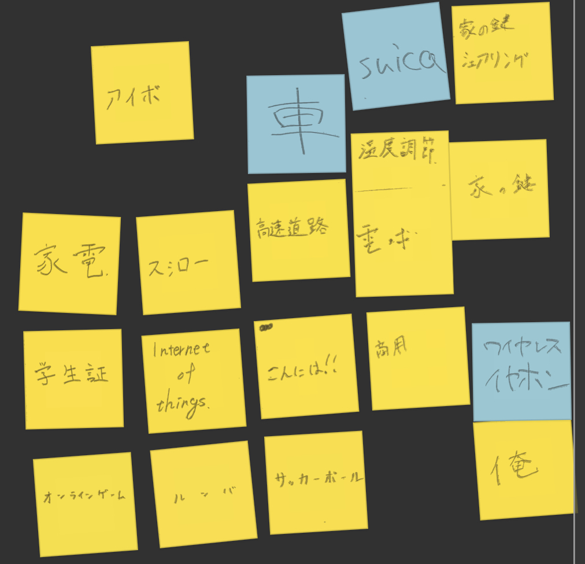
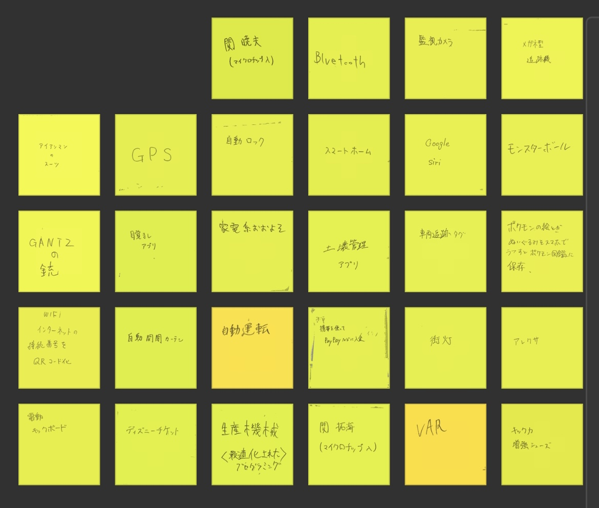
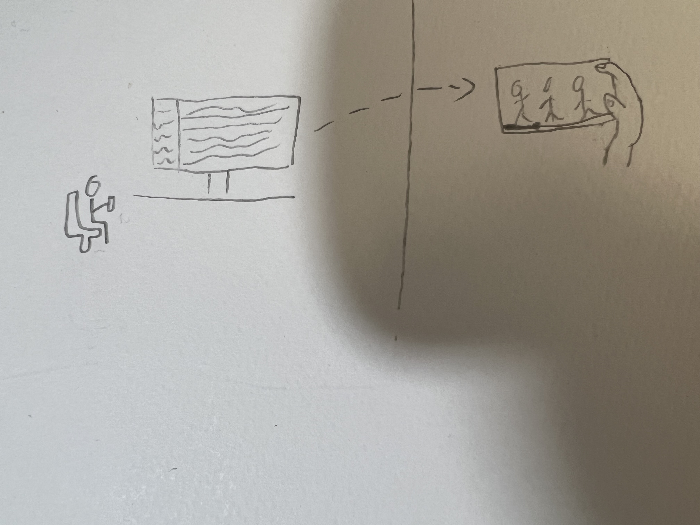
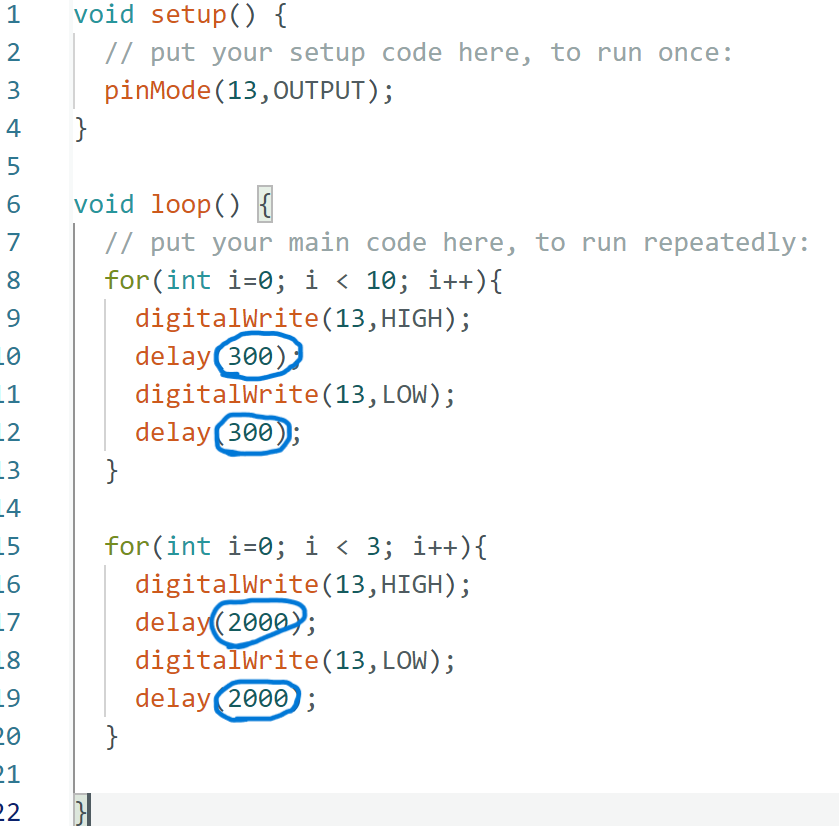

IoTとは何か
IoTとは、Internet of Things（モノのインターネット）の略称です。
IoTとは、ネットワークに接続されたデバイス（センサーやアクチュエーターなど）を使って、様々な情報を収集・解析し、制御や遠隔操作を行う技術やシステムを指します。
IoTでは、センサーなどのデバイスが収集した情報をインターネットを通じてクラウド上に送信し、
クラウド上でデータを処理し、データ解析や機械学習による予測、制御指令を発行することで、さまざまな情報を活用します。
例えば、家庭用家電製品や車のセンサー、工場の生産ラインなどで、IoT技術が活用されることがあります。
IoTは、様々な分野で活用され、効率化や省エネルギー、安全性の向上など、多くのメリットが期待されています。
また、5Gのような高速通信技術の普及や、人工知能技術との連携など、IoTの発展によって新しいビジネスモデルや社会システムの変化が予想されています。
IoTで何ができそうか？
グループワークした内容（ポストイット画像）


VAR ：グループの中ででた個人的に良いと思った案
自分で考えたアイディア（スケッチ）

僕が考えたIoTで何ができるか？は
「家で録画したものを自分のスマホで家にいないときに見れるようにすることができるのではなか」
と考えました。これができるようになれば空きコマで貯まった録画を消化することができると思いました。
マイコンボード

ソースコードの青丸の所をいじると光の点滅する速さが変わった。